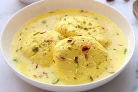
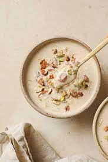

Gulab Jamun
A classic Indian sweet made from milk solids, fried, and soaked in rose-flavored syrup.
Ingredients: Milk solids, Sugar, Rose water
Preparation Time: 45 minutes

Rasmalai
Soft, spongy cheese balls soaked in sweet, cardamom-flavored milk.
Ingredients: Paneer, Milk, Sugar, Cardamom
Preparation Time: 1 hour

Kheer
A creamy rice pudding flavored with cardamom and garnished with nuts.
Ingredients: Rice, Milk, Sugar, Cardamom
Preparation Time: 30 minutes